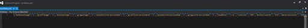
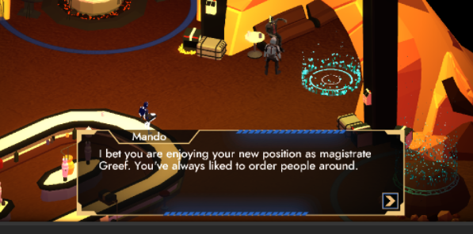

Arnau Falgueras
Code
Project Overview
This project has been approximately four months where we have been working all the class to achieve a common goal: create a videogame that we can be proud of.
During these months I've been working in the code department, working with some people that I knew and other people that in these years of university, I almost hadn't talked to them at all.
Knowing all these people and working with them, has been an experience that I cherish because it has helped me a lot to develop some skills (both code skills and interpersonal skills) and they
have taught me many things about coding and videogame development.
In the code department, we have worked with both C++ and C# in order to improve the base engine where we have worked on and program all the gameplay and features of the game. This has made me
improve my abilities with this language and has helped to work with engines that I'm not accostumed to. Also, because I've been at the end of this project in the QA department finding bugs and
doing bugfixing, I've learned the implications of bad programming or programming without thinking about the consequences of the code (that will help me to think more about what and how I write
my code) and also I've been able to understand how this branch of the projects work and also to find ways to solve bugs (and find them easily and rapidly) in effective ways, making the minimum
changes to avoid create new bugs.
My main contributions
Buttons And Checkboxes
I started this project doing UI, and one of my first main jobs was to do the button and checkbox systems in C++. Mainly, the goal was to make a component easy enough so that anyone could use it in the engine and with the ability to be selected and to be clicked. These actions had to have the possibility to show visual feedback and to call C# to execute the script that had the button or checkbox.

Navigation Of UI
Another UI contribution really important was the navigation between the different UI elements (mainly buttons and checboxes). This way, we could change the button or checkbox selected by using the gamepad, this contribution is mainly used in the different menus that we find in the game. Equally as the buttons and checboxes component, this component was also created in order to be used easily by everyone.

Skill Trees
One of the most important parts in any HUB in a roguelite game are the skill trees. So one of my jobs in a vertical slice was to make the first implementation of the skill trees. The goal was a prototype of the skill trees, where you could navigate and "buy" skills, also make a way to allow that every node had its description, use, icon and price.

Save System
Before going to the QA department, I had one last job really important for our game: the save system. So I deviced a system where we could save all the variables that we should maintain saved in a json and then, we could load this json to set all those variables with the json's values. Apart from this, I also change the main menu to have the possibility of "new game" (resetting all the saved variables to the default value) and "continue" (loading all the saved variables, but only accessible when exists a saved game).

Bugfixing
Becuase in a project as big as ours, where many people program different implementations and sometimes there isn't as many comunication as it should, it's normal that the game ends up with lots of bugs and mistakes, that make the game sometimes unplayable, and sometimes tedious. For this reason, the last month I spent most of my time doing QA (playing the game in order to find the different bugs that could exist in the game to report it) and also bugfixing. For the bugfixing, first I understood the bug or mistake that had been notified, then I recreated it, and when I achieved it, I tried to find the reason why this bug happened. When the reason was found, the rest was to solve it in a simple and effective way.

Other contributions
Font Importer
I implemented a font importer to be able to use different fonts in our engine.
HUD First Implementation
I implemented the first iteration of the HUD that would appear in the gameplay.

Shaders In Menus
I implemented some shaders in the menus (mostly the bars like the audio volume).
Central Text Controller
I implemented a text controller in C# to avoid have multiple scripts to control texts of different scenes.
Skytrooper shot and polish
I did some polish of the skytroopers and I implemented the functions for the shooting of this enemy.